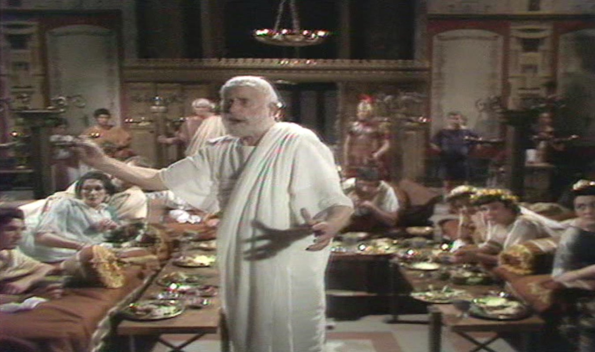
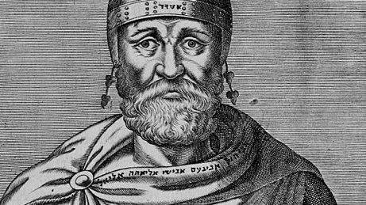
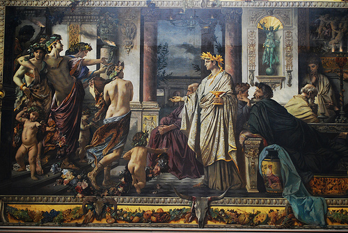

Escépticos
Escépticos de la Academia
Académicos
En la misma época en que el escéptico Timón ejercía su actividad en Atenas, también lo hacían otros filósofos como Epicuro que tenía su propia escuela en el Jardín o Arcesilao en la Academia platónica. Arcesilao llegó a ser director de la Academia y en desacuerdo con ciertas posturas inmovilistas cambió la orientación en dirección a un antidogmatismo, que se fue convirtiendo en escepticismo.
La escuela que fundó Platón en el año -387, junto al parque de Akademos era conocida con el nombre de la "Academia". En el libro VII de "La República", se refleja la forma que adoptaba esta enseñanza cuya finalidad era la formación de los filósofos y explica también como llevaban a cabo esta cuestión mediante diálogos, debates y discusiones.
Después de Platón, dirigieron la Academia o fueron escolarcas de la misma, su sobrino Espeusipo, Jenócrates de Calcedonia, conocido por la división que hizo de la filosofía en física, ética y lógica, Polemón de Atenas, Crates de Atenas y Arcesilao de Pitane. Se utiliza el término "escolarca" para referirse tanto a los fundadores de una escuela como a los sucesivos dirigentes, a veces se utiliza otro término similar "diácodo" pero en ese caso no está incluido el fundador, y se refiere solo a los dirigentes posteriores.
Con Arcesilao de Pitane, más partidario de la dialéctica socrática, se inicia el período escéptico de la Academia, este periodo a veces se conoce con el nombre de Academia media, posteriormente otro destacado académico escéptico fue Carnéades de Cirene, durante el periodo llamado la Academia nueva. Actualmente no se suele distinguir entre Academia media y nueva, se acepta normalmente la existencia de un primer período, el de la Academia fundada por Platón, y un segundo período llamado, indistintamente, Academia media o nueva, inaugurado por Arcesilao y continuado un tiempo después por Carnéades y Antíoco. Posteriormente volvió a cambiar de orientación. La Academia platónica se mantuvo abierta largo tiempo, hasta el año 529, cuando el emperador Justiniano ordenó cerrar todas escuelas filosóficas de Atenas.
Aunque tenían cosas en común también había notables deferencias entre Pirrón y Timón y los académicos. La suspensión del juicio, a diferencia de los pirronianos, para los académicos surge por la imposibilidad de diferenciar con certeza las representaciones verdaderas de las falsas, ademas de que para cada argumento existe uno contrario con igual valor probatorio.
Arcesilao nació hacia el -315 y pasó primero por la escuela peripatética, cuyo director era entonces Teofrasto y posteriormente por la Academia. Prestó una atención especial al problema del conocimiento y su validez y a la dificultad de precisión entre conocimiento verdadero y opinión, recomendando la suspensión del juicio. Arcesilao sostenía que no puede lograrse ninguna clase de certeza, iniciando así la "suspensión del juicio", que es una de las características más importantes del escepticismo.
Unos años después llego a la dirección de la academia otro escéptico,
Carnéades que nació hacia el -215, y dirigió la Academia hacia el año -162, suaviza el escepticismo pirrónico que había marcado el periodo en que estuvo al frente Arcesilao, admitiendo un cierto probabilismo en algunas cuestiones, lo que le valió numerosas críticas.
Un tiempo después cuando Antíoco fue dirigente de la Academia, rechazó el probabilismo que se había desarrollado en la escuela y defendió que incluso para sustentar una probabilidad debe partirse de una certeza absoluta. Con este intento de superación del escepticismo quiso revitalizar la doctrina de Platón, aunque estuvo muy influenciado por el estoicismo, fue discípulo de Filón de Larisa y a su vez maestro de Cicerón.
Tanto Arcesilao como Carnéades expusieron sus enseñanzas de manera verbal y no dejaron nada escrito, (o no nos ha llegado) lo que sabemos es gracias a los escritos de Clitómaco de Cartago, discípulo de Carnéades, que se encargó de recoger las enseñanzas de sus maestros. Hacia el año -80, la Academia abandona definitivamente su orientación antidogmática y entra en un periodo de eclecticismo, pasando el escepticismo a una serie de escuelas escépticas herederas del pirronismo antiguo.
Clitómaco de Cartago

Clitómaco de Cartago (-187 a -110 aprox.). Primero ejerció de filósofo en Cartago, luego se trasladó a Atenas donde conoció a Carnéades y se hizo su discípulo. Dirigió la academia desde el año -126, hasta su muerte. Dedicó su mayor esfuerzo a poner por escrito y a divulgar las teorías escépticas, sobre todo las de su maestro Carnéades.
Filón de Larissa

Filón de Larissa (Tesalia, -100 aprox.), fue discípulo de Clitómaco, al que sucedió como director de la academia hasta su muerte. Partidario del escepticismo de Arcesilao y Carnéades primero, luego abandonó esta postura por un dogmatismo en el cocimiento, en teoría cercano a las tesis de Platón. Estuvo en contra de la doctrina escéptica de la suspensión del juicio y mantuvo que eran necesarios unos principios morales, su discípulo Antíoco de Ascalón defendió firmemente esta tesis. Filón estuvo en Roma donde Cicerón escuchó algunas de sus lecciones.
Antíoco de Ascalón

Sucedió a su maestro Filón en la dirección de la Academia desde -88 hasta -68 aprox. Con Antíoco desaparecen las tendencias escépticas de la Academia y se entra en un periodo de marcado eclecticismo, en el que las propuestas eran una vuelta a Platón y Aristóteles y un acercamiento a los estoicos, si bien no al estoicismo original, sino al propuesto posteriormente por Panecio y Posidonio.
<- Atrás